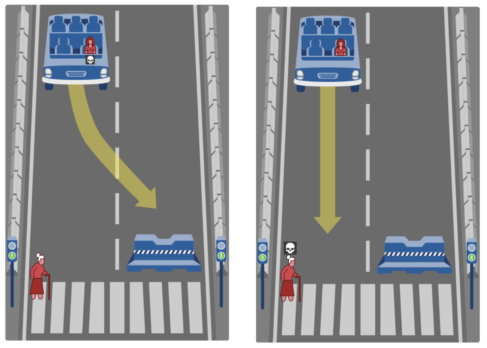

Apple Face ID is a security measure developed by Apple for use in IOS devices that is used as an alternative to password protection for the device by instead using biometric authentication. Face ID stores and compares face scans with enough flexibility to be able to open at a later date and in a variety of lighting conditions, while also not allowing a similar-looking person or people using a mask to get into your phone. When surveys estimate that up to a third of Americans use no password protection on their phones, facial recognition provides an easy and secure alternative to a traditional digit or word-based passwords. Also, as up to three-quarters of attacks on smartphones exploit the use of short or simple passwords, facial recognition can be used to add a substantial level of security to the phone. Criticisms and concerns of Face ID mainly focus on the use and storage of an individuals biometric information. Many are concerned that a user's information could be used against their will without their knowledge or approval. This could also refer to the potential of leaks of this biometric information for nefarious parties to abuse. Another concern is where is data is being stored and whether it even can be used outside of the facial ID system.
Tesla autopilot is an advanced driver-assistance system developed by Tesla for use in Tesla's vehicles. It has a variety of features including lane centering, traffic-aware cruise control, automatic lane changes and self-parking. Tesla claims that Autopilot gives you more confidence behind the wheel while simultaneously increasing your safety on the road and making highway driving more enjoyable. The way autopilot works is by having a network of cameras using photo recognition around the vehicle to give the system a better idea of its surroundings while the user is still in full control of the car. The system will give the driver intuitive access to the information which it is using to control the vehicle using autopilot. Tesla autopilot also uses this photo recognition for emergency steering and braking to prevent accidents. In a newer update of the Autopilot software for the Model S and Model X, the vehicle can use surrounding information gathered by the cameras while on a highway to adjust speed and change lanes in response to the conditions of the road and other vehicles. The main concerns with Tesla's Autopilot system comes down mainly to the safety of the software and whether it's ready for full Autopilot. While these systems are in place for every newer Tesla vehicle, they more provide assistance rather than a full autopilot, in a similar sense to how an aircraft's autopilot also isn't a full autopilot. Full Self-Driving is on the table for Tesla with a beta software being released to a few employees and customers in May this year, but many are skeptical about this technology. This can clearly be seen in the conundrum between whether a self-driving car can make the decisions necessary to truly self-drive, such as making the decision between saving a pedestrian and saving the driver.
The use of facial recognition in commercial uses for security purposes is being looked into thoroughly as security of information is now a paramount concern for many companies and individuals as cybercrime is on the rise. An example of a secured system using facial recognition for an ATM is as follows: A user will look into a camera for an ATM and once detecting only one face the ATM will proceed, connecting the user to their account and allowing them to interact. This system can be seen in many different security systems such as in the aforementioned Apple Face ID. These systems can also be seen in airports, which are using facial recognition as a security measure to make sure that the person boarding the flight is who they say they are, as well as streamlining and speeding up the boarding process. Biometric data, like that gained through facial or photo recognition scans, could also go toward fighting terrorists using false identities and has already been used by multiple countries through project FIRST which shares the biometric data on foreign terrorists.